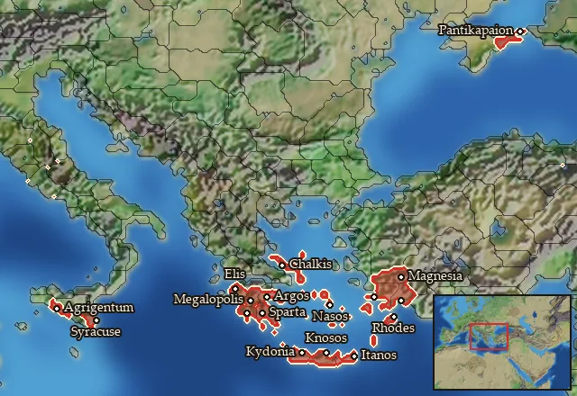

RTR: Imperium Surrectum
RTR: Imperium SurrectumMercenary Peloponnesian Hoplites


Mercenary. Hired from a regional pool, not recruited from a building.
Class: spearmen · Category: infantry · Men per unit: 40
Description
While the Hoplite was not only a soldier, but a citizen with pride and influence, many Greek Hoplites also found fame and wealth abroad, serving as mercenaries. This was especially true for the inhabitants of less densely populated areas or those with a greater population, yet few city states, or those who simply hailed from war-torn regions dominated by political instability. Hoplite mercenaries are first recorded during the opening stages of the Peloponnesian War: Thucydides reports that Corinth sent 1600 men, apparently recruited mainly from Achaia and Arcadia, to aid Potidaia on the Chalkidike against the Athenians (Thuk. I, 60, 1-3). In fact, while Xenophon (Anab. I, 2, 6) also mentions Thessalian and Chalcidian Hoplite mercenaries, the large majority came from the Peloponnese.
By the Hellenistic period, the recruiting fields of these *mistophoroi *(literally "those who receive pay") had drastically widened, with only 11% of the Greek non-specialist infantry mercenaries known from inscriptions hailing from the Peloponnese. Yet, these men had gained the reputation of an elite. In 315 BC, before an important campaign against Kassandros, Antigonos I Monophtalmos spent huge amounts of money and energy to hire 8000 mercenaries from the Peloponnese (Diod. XIX, 57, 4; 60, 1). Almost two centuries later, around 140 BC, the Ptolemaic garrison on Cyprus was still spearheaded by Achaian Hoplites (OGIS I. 151). These examples show the continued importance of these mercenaries, who seem to have come more and more from Achaia, after Arkadia had dominated as the most usual region of origin in the classical period. The Hoplite phalanx might have been increasingly seen as outdated, but these men held on to their traditions and would be hard to overcome by any foe.
Stats
| Rank in roster | ||
|---|---|---|
| Men per unit | 40 | ███······· 31% |
| Attack | 11 | ████······ 44% |
| Charge bonus | 16 | ███████··· 68% |
| Defence | 49 | █████████· 93% |
| · armour | 11 | ███████··· 65% |
| · defence skill | 33 | ██████████ 97% |
| · shield | 5 | ██████···· 58% |
| Morale | 12 | ██████···· 58% |
| Discipline | Normal | |
| Training | Highly trained | |
| Upkeep per turn | 760 dn | ███████··· 73% |
Weapons
| Primary | Secondary | Primary | Secondary | Primary | Secondary | Primary | Secondary | ||||
|---|---|---|---|---|---|---|---|---|---|---|---|
| Attack | 11 | — | Charge bonus | 16 | — | Type | melee · blade | — | Damage | piercing | — |
| Properties | Light spear (braced against cavalry charges from the front) · +8 attack against cavalry | — |
Defence
| Primary | Secondary | Primary | Secondary | Primary | Secondary | Primary | Secondary | ||||
|---|---|---|---|---|---|---|---|---|---|---|---|
| Total | 49 | — | Armour | 11 | — | Defence skill | 33 | — | Shield | 5 | — |
Condition and terrain
| Hit points | 1 | Ground: scrub / sand / forest / snow | -1 / -1 / -4 / -1 | Charge distance | 30 | Formations | Square |
Technical stats
| Time between blows (primary / secondary) | 2.5 s / — | Extra fatigue in hot climates | 2 | Collision mass per man (1.0 is normal) | 1.26 | Spacing between men: close / loose | 1 × 1.05 m / 2 × 2.4 m |
| Default ranks | 5 |
In battle: Can sap · Very good stamina
Where to hire it
Mercenaries are hired from a regional pool, not recruited from a building. This unit is offered by 13 pools covering 17 regions, at 4,755–5,072 dn to hire and 2–3 experience.
Mercenary pools: Acragas · Aegean Islands · Argolis · Arkadia · Caria · Crete · Dorian Pentapolis · Euboia · Gytheion · Halikarnassos · Laconia · Pantikapaion · Syracuse

At least one of those pools sells to any faction that has an army in range, with no faction restriction.
Some pools additionally restrict it to Acragas · Bosporans · Ptolemaic Empire · Ptolemaic Rebels · Sparta · Syracuse.